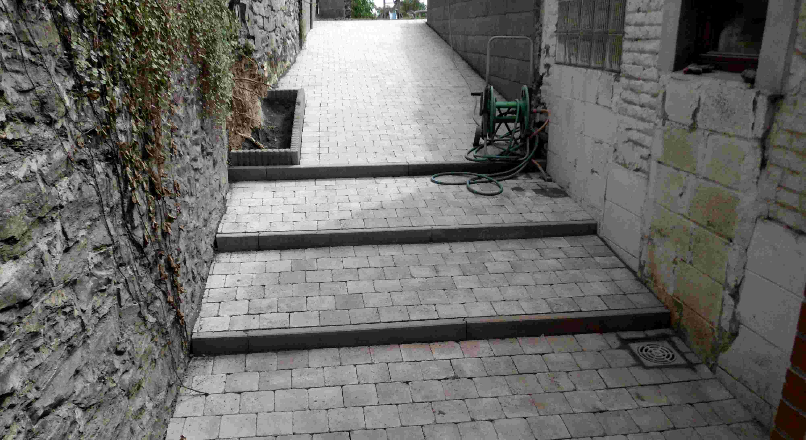

CONSTRUCT
Le spécialiste du terrassement
dans le hainaut et nord pas de calais
Accueil
Prestations
Secteur
Contact
GSM : +32479603042
Email : sandy.deroubaix@hotmail.com
Dalle - Terrassement - Cuve à eau - Egouttage - Mur de soutien - Empierrement ciment - Parking particulier - Pavage terrasse et allée - Voirie - Asphaltage - Pose de pavé klinkers - Pose de bordure - Bassin d'orage - Etang - Location de grue avec main d'oeuvre
Image Holder
Company
